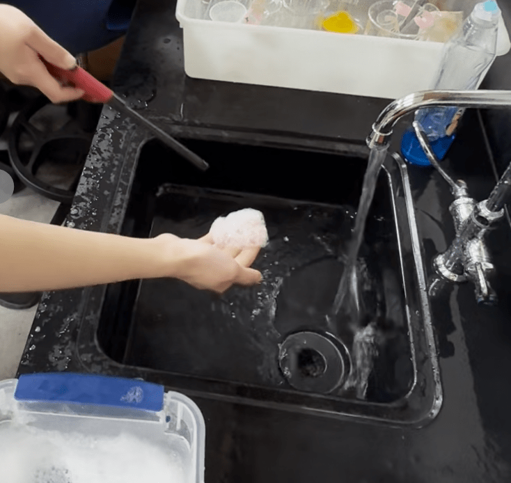

What makes a lighter flame glow so vividly in the air? When butane gas meets oxygen and burns, it releases energy you can actually see as flickering light and heat. Picture this simple yet dramatic reaction right in your own palm. It is chemistry transforming fuel into fire right before your eyes!
Background Information
The fire-on-hand demonstration showcases the surprising side of chemistry, where a flame can briefly appear without causing harm. By using scientific principles of combustion and heat transfer, this experiment highlights how fire behaves under controlled conditions. Who’s excited to turn a shocking moment into a powerful lesson about energy, reactions, and safety in science?
Materials
Butane gas (or other organic gases)
Lighter
Dish Soap
Container bin
Water
Sink
Safety Note
Wear lab safety googles and gloves as some chemicals may be poisonous.
Be careful when handling the matches or lighters.
Always be ready to dip your hands in water.
VERY IMPORTANT: UNDER ADULT SUPERVISION BECAUSE DANGEROUS!!
Experiment Procedure
Mix dish soap with a bin of water to create small bubbles.
Insert butane gas (should be big bubbles)
Wet your hand and forearm with water.
Grab a SMALL amount of butane and soap bubbles.
Scrap off bubbles on the back of your hand.
Light the bubbles on fire!
**IMMEDIATELY DIP HANDS IN WATER WHEN FEELING HOT**

How Does This Work?
The flame seen in the fire-on-hand demonstration comes from the rapid combustion of a flammable liquid or vapor above the skin, not the skin itself. When ignited, the fuel reacts quickly with oxygen in the air, releasing energy in the form of heat and light. Because the reaction happens very fast and the heat is mostly carried away by the flame and surrounding air, little heat is transferred to the hand. Additionally, the presence of moisture and the short duration of the flame help prevent the skin from heating to a harmful temperature. As the fuel is consumed, the combustion stops and the flame disappears.
Future Explorations
You can try changing the type of fuel to observe how flame size and duration are affected. You can also connect this experiment to real-world fire safety by discussing why brief exposure behaves differently from sustained heat.